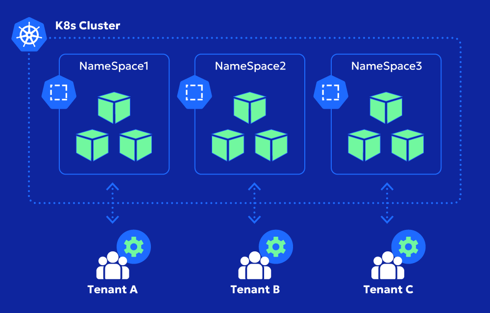
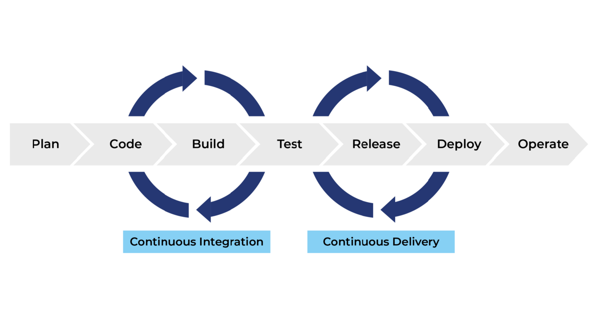

Hasin Ullah
DevOps & Cloud Engineer
Profile Summary
DevOps Engineer with hands-on experience in AWS, Kubernetes, Terraform, CI/CD automation, containerization, and Linux server management. Skilled in deploying scalable cloud infrastructure on AWS, Azure, and On-prem, and implementing production-grade pipelines. Strong foundation in IaC, monitoring, and cloud-native DevOps workflows.
Skills
OS & Programming
Linux (Ubuntu, Red Hat), Windows Server, Bash, Python
Containerization & Orchestration
Docker, Docker Swarm, Kubernetes
Infrastructure as Code
Terraform, Ansible
Monitoring & Observability
Prometheus, Grafana
Security
SonarQube, OWASP, Trivy
VCS & Collaboration
Git, GitHub, GitLab, Jira
Cloud Platforms
AWS, Azure
CI/CD Tools
GitHub Actions, Jenkins, AWS CodePipeline, Azure Pipelines
Web & Databases
Nginx, Apache, PostgreSQL, MySQL, MongoDB
Professional Experience
- Designed and managed AWS cloud infrastructure including EC2, S3, IAM, VPC, RDS, EKS, Lambda, CloudWatch, Route 53, and Load Balancers — enabling secure, scalable, production-grade deployments.
- Managed infrastructure with Terraform, reducing manual provisioning time by 70%.
- Implemented CI/CD pipelines using GitHub Actions, Jenkins, GitLab for automated testing, building, and deployment.
- Containerized applications using Docker and optimized image sizes with multi-stage builds.
- Configured NGINX as a reverse proxy and implemented Blue/Green deployment for zero-downtime releases.
- Deployed and scaled applications within a Kubernetes cluster, managing services and resources efficiently.
- Managed core Linux servers, deployed containerized services, and maintained MongoDB, MySQL databases.
Projects
HalalScan.app – Food & Product Scanner
- Containerized the application using Docker and deployed on a 2-node Kubernetes cluster.
- Implemented CI/CD pipelines with GitHub Actions for automated build, test, and deployment.
- Configured NGINX Ingress, domain setup, and SSL/TLS certificates.
- Monitored application health and logs for reliability and performance optimization.
E-Commerce App
- Containerized using Docker and deployed on AWS EKS cluster with EC2 worker nodes.
- Implemented CI/CD pipelines using AWS CodePipeline (integrated with GitHub) with Slack notifications.
- Integrated Kafka and Redis for caching and session management.
- Implemented basic container scanning using Trivy in CI/CD pipeline.
- Configured CloudWatch monitoring and alerts for CPU/memory thresholds and pipeline health.
- Leveraged AWS services: S3 for static assets, MongoDB for database, Route 53 for DNS, Lambda for serverless tasks.
Certifications
- Cloud Cyber Security Diploma — Al Nafi International College
- DevOps & Cloud Training Program — EXLERAN Technologies (12/2025)
Portfolio Screenshots

Kubernetes Cluster Setup

CI/CD Pipeline

Terraform / AWS Architecture
Contact Me
📞 03408118952 | ✉️ hassanullah9523@gmail.com